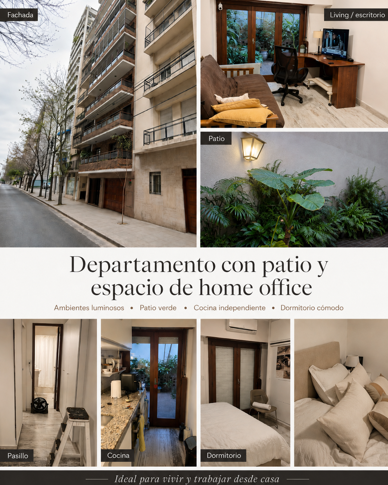
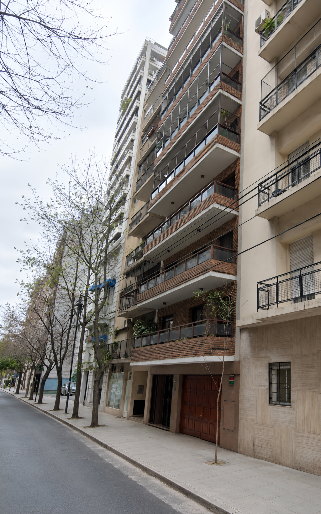
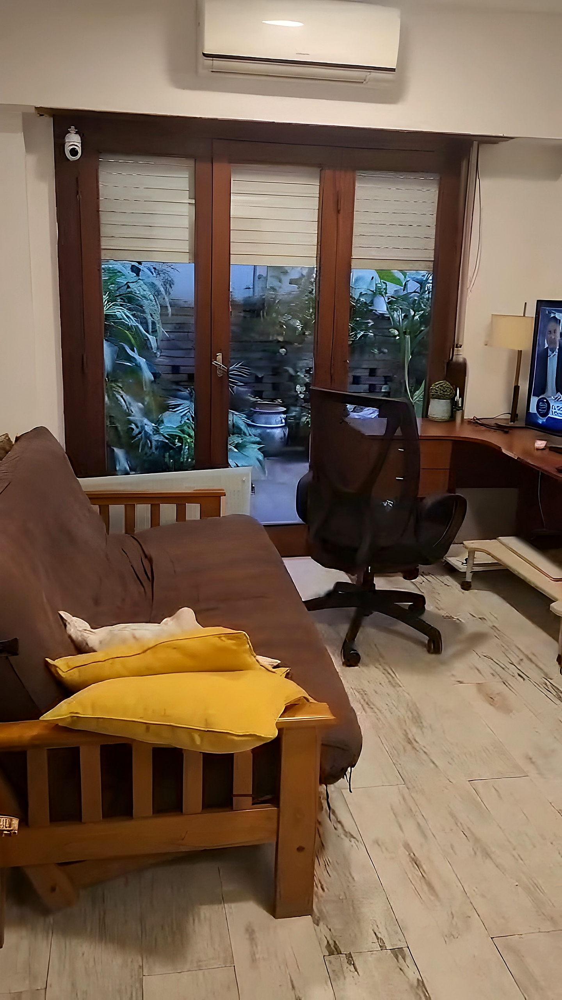
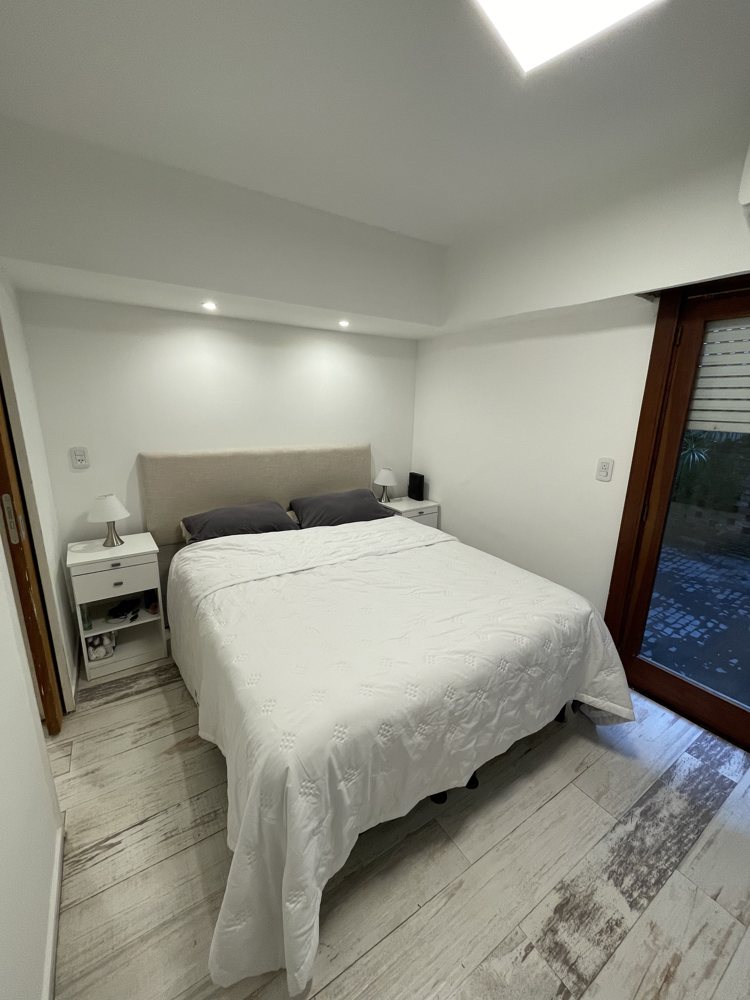
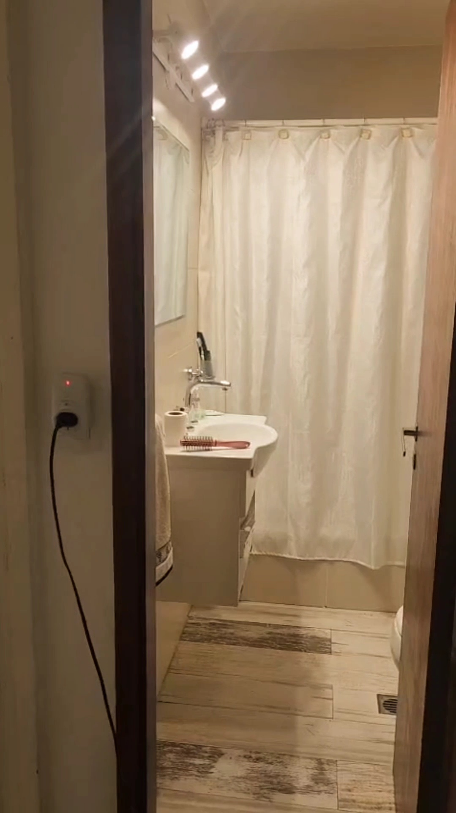
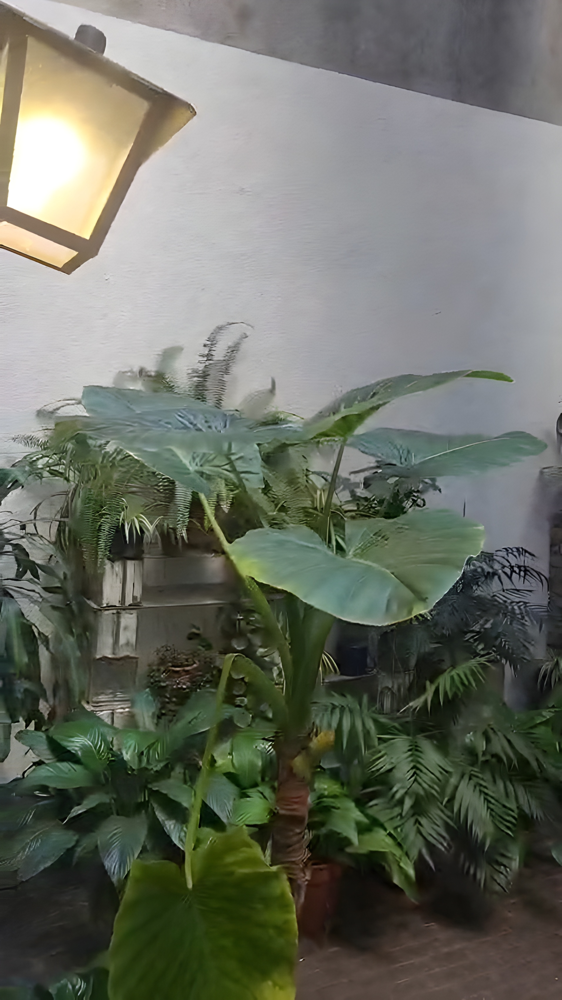
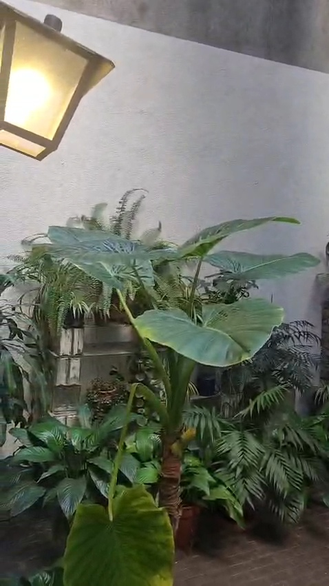
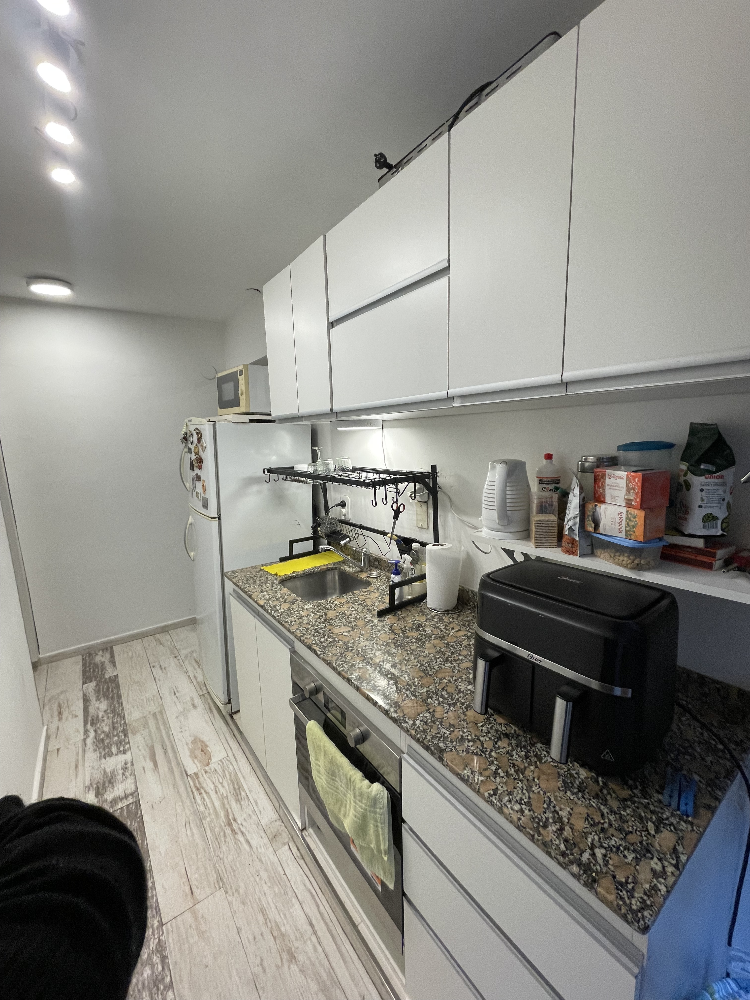

Expensas ordinarias
$130.000 / mes aprox.
A cargo del locatario. Las expensas extraordinarias o Expensas B estarán a cargo del locador.
Barrio Norte · CABA
2 ambientes con gran patio propio — Riobamba entre Marcelo T. de Alvear y Paraguay
Riobamba 919, primer piso contrafrente, aproximadamente 34 m² cubiertos + 35 m² de patio propio descubierto.

Se ofrece en alquiler cómodo departamento ubicado en Barrio Norte, Ciudad Autónoma de Buenos Aires, sobre calle Riobamba, entre Marcelo T. de Alvear y Paraguay.
La propiedad se encuentra en una zona estratégica, con excelente conectividad y cercanía a medios de transporte, comercios, centros médicos, instituciones educativas, edificios gubernamentales, embajadas y espacios emblemáticos de la ciudad, como el Palacio de Aguas Corrientes y la Librería El Ateneo Grand Splendid.
Es una unidad ideal para una persona sola, pareja o profesional que busque vivir en un entorno urbano, cómodo, seguro y tranquilo.
El departamento se ubica en primer piso, contrafrente. La planta baja del edificio se distribuye entre el hall de ingreso y el estacionamiento, por lo que la unidad no se encuentra directamente sobre la calle. Esto le aporta mayor privacidad, buena tranquilidad interior y muy baja exposición al ruido urbano.
Cuenta con aproximadamente 34 m² cubiertos y un amplio patio descubierto de alrededor de 35 m², generando una superficie total muy aprovechable tanto para vivir como para trabajar desde casa.
Un repaso breve del departamento, narrado en formato podcast.
Tocá una foto para verla en grande.









Recorrido visual
Un recorrido breve para apreciar la distribución, el patio y la escala real del departamento.
El video se abre en Google Drive para verlo con mejor calidad cuando esté disponible.
El baño se encuentra renovado y cuenta con bañera, grifería FV y sanitarios Ferrum y Roca.
Dispone además de un extractor de aire potente, que favorece una ventilación eficiente. Si bien su funcionamiento puede percibirse con mayor intensidad sonora que un extractor pequeño, resulta muy práctico para mantener buena ventilación y privacidad dentro del uso cotidiano del inmueble.
El departamento cuenta con buena iluminación y se destaca por ser una unidad muy silenciosa en su interior. Al estar ubicado al contrafrente, no se escucha el movimiento de la calle.
El patio también conserva una atmósfera tranquila, sin ruido del tránsito. Solo en situaciones infrecuentes de manifestaciones o eventos con estruendos en los alrededores podría percibirse sonido externo, pero no forma parte de la experiencia cotidiana del inmueble.
Uno de los puntos más destacados de esta propiedad es su patio propio de aproximadamente 35 m², una característica poco frecuente para departamentos de esta ubicación.
Este espacio permite sumar un área de descanso, recreación, trabajo al aire libre, guardado o expansión cotidiana. Cuenta con cantero, árboles y plantas, lo que aporta una sensación de amplitud y contacto con el exterior poco habitual en departamentos de la zona.
A diferencia de muchas unidades urbanas, el patio mantiene una atmósfera tranquila y sin ruido directo de la calle, lo que lo vuelve especialmente agradable para descansar, leer, trabajar o compartir un momento al aire libre.
Ubicado en Barrio Norte, sobre calle Riobamba, entre Marcelo T. de Alvear y Paraguay, en una zona de excelente acceso urbano.
El departamento se encuentra a pocas cuadras de importantes avenidas y puntos de circulación de la ciudad, con cercanía a Callao y Santa Fe y también a Callao y Córdoba.
Transporte:
La zona se caracteriza por su cercanía a servicios, medios de transporte, centros médicos, comercios, espacios culturales y edificios de categoría. En la misma manzana se encuentran dos embajadas, un edificio gubernamental y construcciones de muy buen nivel, lo que contribuye a un entorno calmo y cuidado.
Ver ubicación en Google MapsEl edificio cuenta con cámaras en el ingreso, portón de rejas de seguridad y un entorno general cuidado.
Además, dispone de encargado y de vecinos y vocales comprometidos con el mantenimiento y el cuidado del edificio, lo que favorece una convivencia ordenada y un buen estado general de los espacios comunes.
El edificio es amigable con mascotas. En el piso hay vecinos que conviven con mascotas, por lo que puede ser una opción adecuada para quienes tienen animales de compañía, siempre dentro de las normas de convivencia del consorcio.
Según acuerdo entre las partes, el departamento puede incluir parte del siguiente equipamiento:
Aclaración: la cama actualmente ubicada en el dormitorio será retirada antes del alquiler, por lo que solamente restaría colocar una cama de una o dos plazas, según necesidad del futuro inquilino.
La locación se instrumentará mediante contrato escrito, con firma ante escribano público, a fin de otorgar mayor seguridad y claridad a ambas partes.
El locatario deberá contratar y mantener vigente durante toda la duración del contrato un seguro contra incendio y/o cobertura integral equivalente para vivienda, emitido por una compañía aseguradora reconocida. La póliza deberá encontrarse vigente al momento de la entrega de llaves y deberá ser renovada en tiempo y forma durante toda la relación locativa.
El locatario tendrá a su cargo el pago de los servicios correspondientes al uso ordinario del inmueble, incluyendo, según corresponda, electricidad, agua, internet u otros servicios contratados o utilizados durante la ocupación de la unidad.
A los fines de un adecuado control administrativo, el locador le enviará todos los meses el importe abonado de los servicios de agua, luz, ABL (calcular pago locador y locatario) y expensas A para que el locador abone conjuntamente con el alquiler antes del 10 de cada mes. Las expensas extraordinarias o B estarán a cargo del locador.
Toda condición específica vinculada a garantías, depósito, actualización del canon locativo, plazo contractual, inventario de bienes opcionales, estado de entrega, seguro exigido y demás aspectos particulares será acordada entre las partes y detallada expresamente en el contrato de locación.
Además del valor del alquiler, estos son algunos gastos orientativos del inmueble, calculados según consumos y facturación reciente. Los importes pueden variar por consumo, actualizaciones tarifarias o modificaciones de los prestadores.
$130.000 / mes aprox.
A cargo del locatario. Las expensas extraordinarias o Expensas B estarán a cargo del locador.
$26.000 / mes
Valor mensual orientativo.
$30.000 a $40.000 / mes
Variable según consumo, uso de aire acondicionado, calefacción y electrodomésticos.
$39.860,70 / mes
Servicio actualmente disponible en el domicilio. Incluye Internet 300 MB + Flow Full sin Deco. El interesado podrá mantenerlo, modificarlo o contratar otro servicio según acuerdo y disponibilidad.
A cargo del locador
El ABL / impuesto inmobiliario correspondiente al inmueble será abonado por el locador.
Gastos mensuales orientativos a cargo del inquilino: $225.860,70 a $235.860,70 aproximadamente.
Este cálculo incluye expensas ordinarias, AYSA, luz estimada e Internet 300 MB + Flow Full sin Deco. No incluye alquiler, depósito, seguro, garantías, ajustes contractuales ni otros consumos o servicios adicionales. Los valores son orientativos y pueden modificarse.
Para coordinar una consulta o solicitar más información, enviar mensaje por WhatsApp indicando interés en el departamento de Riobamba 919, Barrio Norte.
Consultar por WhatsApp